Aplicación 3.7 (Autocorrelación y regresiones dinámicas): Modelos ARDL y VAR
Caso univariante (especificación ARDL): Tipos de interés en España en la década de 1980
En esta primera aplicación se estimará un modelo de regresión uniecuacional con autocorrelación en los errores y se propondrán soluciones al problema.
Código R
# Lectura de librerías
library(tidyverse)
library(dynlm)
library(car)
library(lmtest)
library(sandwich)
library(orcutt)
# Lectura de datos
TIPOS_INT_ESP <- read_delim("data/TIPOS_INT_ESP.csv", delim = ";")
str(TIPOS_INT_ESP)spc_tbl_ [35 × 4] (S3: spec_tbl_df/tbl_df/tbl/data.frame)
$ date: Date[1:35], format: "1982-01-01" "1982-04-01" ...
$ R3M : num [1:35] 16.1 17.5 17.1 18.5 17.9 ...
$ RD : num [1:35] 8.12 8.29 8.36 8.49 8.54 8.7 8.71 8.79 9.04 9.12 ...
$ RL : num [1:35] 17.5 17.6 17.7 17.7 17.7 ...
- attr(*, "spec")=
.. cols(
.. date = col_date(format = ""),
.. R3M = col_double(),
.. RD = col_double(),
.. RL = col_double()
.. )
- attr(*, "problems")=<externalptr> head(TIPOS_INT_ESP)# A tibble: 6 × 4
date R3M RD RL
<date> <dbl> <dbl> <dbl>
1 1982-01-01 16.1 8.12 17.5
2 1982-04-01 17.5 8.29 17.6
3 1982-07-01 17.2 8.36 17.7
4 1982-10-01 18.5 8.49 17.7
5 1983-01-01 17.9 8.54 17.7
6 1983-04-01 21.8 8.7 18.4# Gráfica de las series temporales
ggplot(TIPOS_INT_ESP,aes(date,R3M)) +
geom_line(color="blue") +
geom_line(aes(date,RD),color="orange") +
geom_line(aes(date,RL),color="green") +
xlab("") + ylab("Tipos de interés")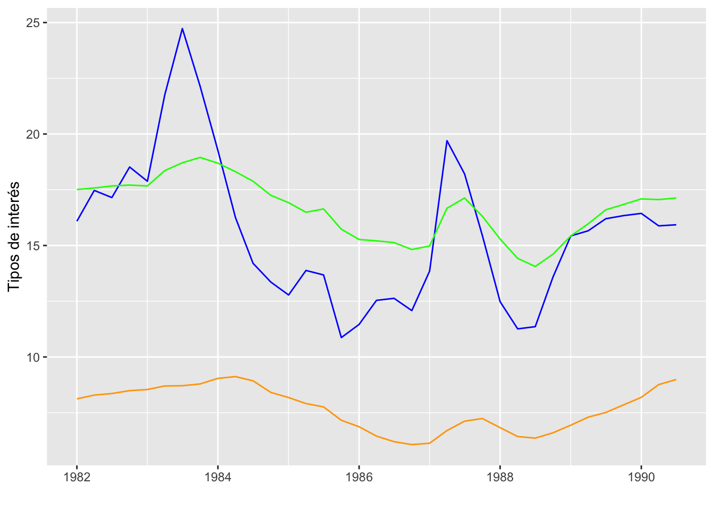
# Asignación del formata trimestral
TIPOS_ESP_ts <- ts(TIPOS_INT_ESP[,2:4], start=c(1982,1), end = c(1990,3), frequency = 4)
plot(TIPOS_ESP_ts)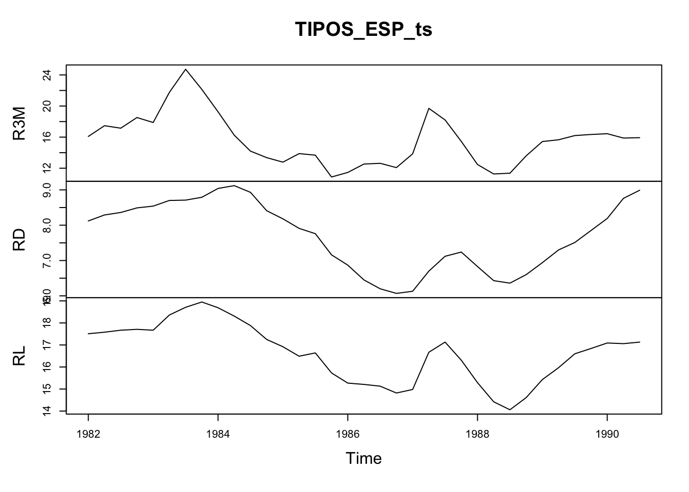
# Modelo de Klein-Monti (estático)
summary(lm_KM <- lm(RL ~ R3M + RD, data=TIPOS_ESP_ts))
Call:
lm(formula = RL ~ R3M + RD, data = TIPOS_ESP_ts)
Residuals:
Min 1Q Median 3Q Max
-0.75780 -0.16274 0.07166 0.25488 0.61088
Coefficients:
Estimate Std. Error t value Pr(>|t|)
(Intercept) 7.02728 0.48653 14.444 1.43e-15 ***
R3M 0.15918 0.02301 6.918 7.84e-08 ***
RD 0.92600 0.07777 11.907 2.69e-13 ***
---
Signif. codes: 0 '***' 0.001 '**' 0.01 '*' 0.05 '.' 0.1 ' ' 1
Residual standard error: 0.3567 on 32 degrees of freedom
Multiple R-squared: 0.9322, Adjusted R-squared: 0.9279
F-statistic: 219.9 on 2 and 32 DF, p-value: < 2.2e-16# Librería dynlm
summary(dynlm_KM_0 <- dynlm(RL ~ R3M + RD, data=TIPOS_ESP_ts)) # Especificación ARDL(0,0,0)
Time series regression with "ts" data:
Start = 1982(1), End = 1990(3)
Call:
dynlm(formula = RL ~ R3M + RD, data = TIPOS_ESP_ts)
Residuals:
Min 1Q Median 3Q Max
-0.75780 -0.16274 0.07166 0.25488 0.61088
Coefficients:
Estimate Std. Error t value Pr(>|t|)
(Intercept) 7.02728 0.48653 14.444 1.43e-15 ***
R3M 0.15918 0.02301 6.918 7.84e-08 ***
RD 0.92600 0.07777 11.907 2.69e-13 ***
---
Signif. codes: 0 '***' 0.001 '**' 0.01 '*' 0.05 '.' 0.1 ' ' 1
Residual standard error: 0.3567 on 32 degrees of freedom
Multiple R-squared: 0.9322, Adjusted R-squared: 0.9279
F-statistic: 219.9 on 2 and 32 DF, p-value: < 2.2e-16# Contrastes de correlación en los errores (autocorrelación)
# Errores estimados del modelo
resid <-residuals(dynlm_KM_0)
plot(resid)
abline(h=0, lty=2)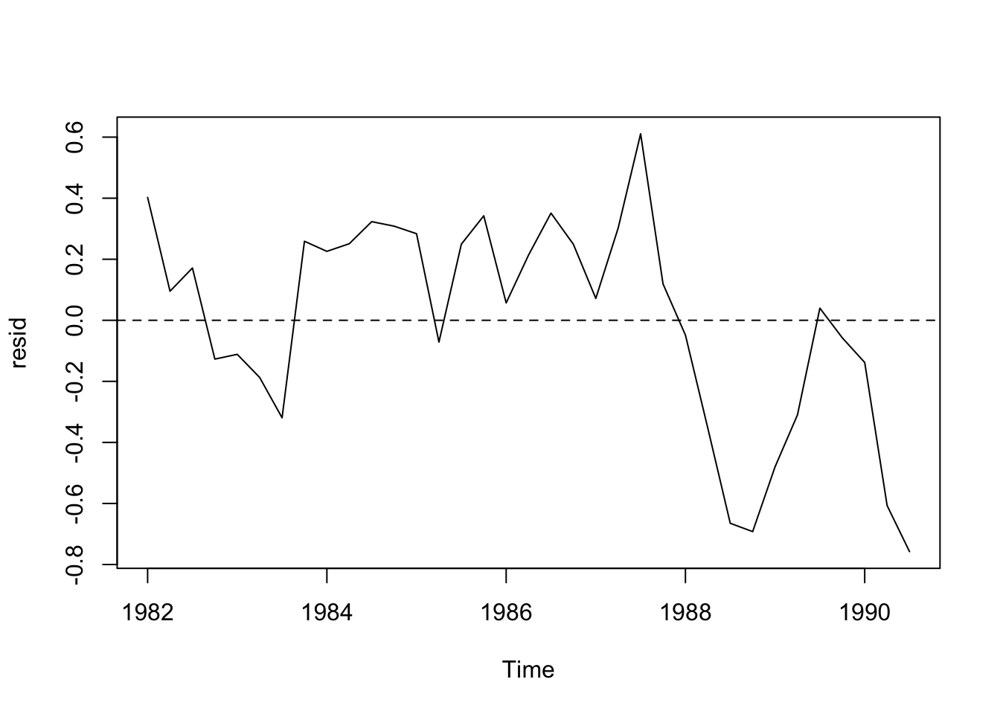
# Correlograma de los residuos
corr <- acf(resid)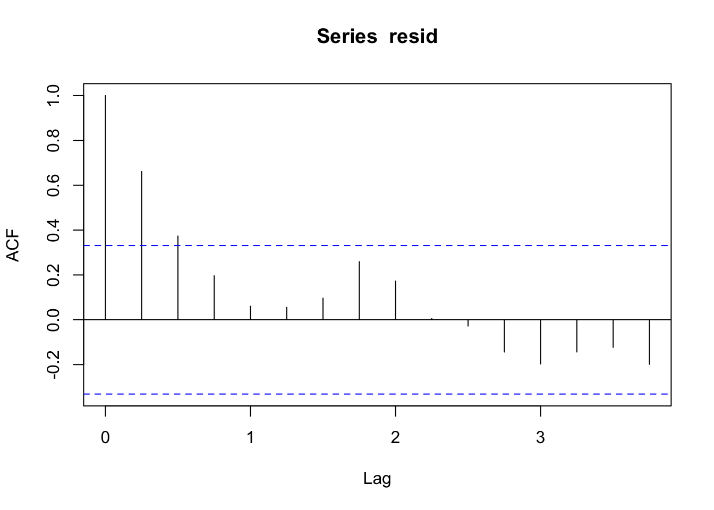
corr$acf[2:10][1] 0.661182301 0.373478408 0.196080083 0.059991302 0.055270320 0.096234644
[7] 0.258730586 0.172078454 0.005038669# Test de Durbin-Watson
dwtest(dynlm_KM_0, alternative = "two.sided")
Durbin-Watson test
data: dynlm_KM_0
DW = 0.49682, p-value = 9.951e-09
alternative hypothesis: true autocorrelation is not 0dwtest(dynlm_KM_0, alternative = "greater")
Durbin-Watson test
data: dynlm_KM_0
DW = 0.49682, p-value = 4.976e-09
alternative hypothesis: true autocorrelation is greater than 0# Test de Breusch-Godfrey
bgtest(dynlm_KM_0, order=1, type="Chisq", fill=0)
Breusch-Godfrey test for serial correlation of order up to 1
data: dynlm_KM_0
LM test = 18.689, df = 1, p-value = 1.539e-05# Corrección de la autocorrelación:
# MCO corregidos: errores estándar robustos, HAC (Newey-West)
summary(dynlm_KM_0 <- dynlm(RL ~ R3M + RD, data=TIPOS_ESP_ts), vcov.=vcovHAC(dynlm_KM_0))
Time series regression with "ts" data:
Start = 1982(1), End = 1990(3)
Call:
dynlm(formula = RL ~ R3M + RD, data = TIPOS_ESP_ts)
Residuals:
Min 1Q Median 3Q Max
-0.75780 -0.16274 0.07166 0.25488 0.61088
Coefficients:
Estimate Std. Error t value Pr(>|t|)
(Intercept) 7.02728 0.66475 10.571 5.72e-12 ***
R3M 0.15918 0.03572 4.457 9.56e-05 ***
RD 0.92600 0.11776 7.863 5.69e-09 ***
---
Signif. codes: 0 '***' 0.001 '**' 0.01 '*' 0.05 '.' 0.1 ' ' 1
Residual standard error: 0.3567 on 32 degrees of freedom
Multiple R-squared: 0.9322, Adjusted R-squared: 0.9279
F-statistic: 146.4 on 2 and 32 DF, p-value: < 2.2e-16# Mínimos cuadrados generalizados (MCG): errores AR(1)
cochrane.orcutt(dynlm_KM_0)Cochrane-orcutt estimation for first order autocorrelation
Call:
dynlm(formula = RL ~ R3M + RD, data = TIPOS_ESP_ts)
number of interaction: 11
rho 0.773176
Durbin-Watson statistic
(original): 0.49682 , p-value: 4.976e-09
(transformed): 1.69696 , p-value: 1.308e-01
coefficients:
(Intercept) R3M RD
7.013488 0.157823 0.913996 # Modelo dinámico ARDL(1,1,1)
summary(dynlm_KM_1 <- dynlm(RL ~ L(RL, 1:1) + L(R3M, 0:1) + L(RD, 0:1), data=TIPOS_ESP_ts))
Time series regression with "ts" data:
Start = 1982(2), End = 1990(3)
Call:
dynlm(formula = RL ~ L(RL, 1:1) + L(R3M, 0:1) + L(RD, 0:1), data = TIPOS_ESP_ts)
Residuals:
Min 1Q Median 3Q Max
-0.40953 -0.14242 -0.01385 0.16811 0.38224
Coefficients:
Estimate Std. Error t value Pr(>|t|)
(Intercept) 1.95931 1.02773 1.906 0.06690 .
L(RL, 1:1) 0.71922 0.13830 5.200 1.60e-05 ***
L(R3M, 0:1)0 0.16624 0.02491 6.673 3.05e-07 ***
L(R3M, 0:1)1 -0.07777 0.03656 -2.127 0.04237 *
L(RD, 0:1)0 0.65959 0.19117 3.450 0.00179 **
L(RD, 0:1)1 -0.48983 0.24726 -1.981 0.05748 .
---
Signif. codes: 0 '***' 0.001 '**' 0.01 '*' 0.05 '.' 0.1 ' ' 1
Residual standard error: 0.2333 on 28 degrees of freedom
Multiple R-squared: 0.9743, Adjusted R-squared: 0.9697
F-statistic: 212 on 5 and 28 DF, p-value: < 2.2e-16# Comparación de modelos
compareCoefs(dynlm_KM_0,dynlm_KM_1)Calls:
1: dynlm(formula = RL ~ R3M + RD, data = TIPOS_ESP_ts)
2: dynlm(formula = RL ~ L(RL, 1:1) + L(R3M, 0:1) + L(RD, 0:1), data =
TIPOS_ESP_ts)
Model 1 Model 2
(Intercept) 7.027 1.959
SE 0.487 1.028
R3M 0.159
SE 0.023
RD 0.9260
SE 0.0778
L(RL, 1:1) 0.719
SE 0.138
L(R3M, 0:1)0 0.1662
SE 0.0249
L(R3M, 0:1)1 -0.0778
SE 0.0366
L(RD, 0:1)0 0.660
SE 0.191
L(RD, 0:1)1 -0.490
SE 0.247
# Estimación de efectos parciales
# Efectos a corto y largo plazo
library(nlWaldTest)
# Modelo estático (c.p=l.p)
nlConfint(dynlm_KM_0, c("b[2]","b[3]")) value 2.5 % 97.5 %
b[2] 0.1591826 0.1140841 0.2042812
b[3] 0.9260003 0.7735733 1.0784272nlWaldtest(dynlm_KM_0, "b[2]")
Wald Chi-square test of a restriction on model parameters
data: dynlm_KM_0
Chisq = 47.859, df = 1, p-value = 4.58e-12nlWaldtest(dynlm_KM_0, "b[3]")
Wald Chi-square test of a restriction on model parameters
data: dynlm_KM_0
Chisq = 141.77, df = 1, p-value < 2.2e-16# Modelo dinámico
# Corto plazo
nlConfint(dynlm_KM_1, c("b[3]","b[5]")) value 2.5 % 97.5 %
b[3] 0.1662367 0.1174099 0.2150636
b[5] 0.6595859 0.2848907 1.0342812nlWaldtest(dynlm_KM_1, "b[3]")
Wald Chi-square test of a restriction on model parameters
data: dynlm_KM_1
Chisq = 44.528, df = 1, p-value = 2.508e-11nlWaldtest(dynlm_KM_1, "b[5]")
Wald Chi-square test of a restriction on model parameters
data: dynlm_KM_1
Chisq = 11.904, df = 1, p-value = 0.0005602# Largo plazo
nlConfint(dynlm_KM_1, c("(b[3]+b[4])/(1-b[2])","(b[5]+b[6])/(1-b[2])")) value 2.5 % 97.5 %
(b[3]+b[4])/(1-b[2]) 0.3150717 0.1198835 0.5102598
(b[5]+b[6])/(1-b[2]) 0.6045916 0.1048464 1.1043367nlWaldtest(dynlm_KM_1, "(b[3]+b[4])/(1-b[2])")
Wald Chi-square test of a restriction on model parameters
data: dynlm_KM_1
Chisq = 10.009, df = 1, p-value = 0.001557nlWaldtest(dynlm_KM_1, "(b[5]+b[6])/(1-b[2])")
Wald Chi-square test of a restriction on model parameters
data: dynlm_KM_1
Chisq = 5.6224, df = 1, p-value = 0.01773Código Python
# Lectura de librerías
import numpy as np
import pandas as pd
import matplotlib.pyplot as plt
import seaborn as sns
import statsmodels.api as sm
import statsmodels.formula.api as smf
import statsmodels.stats.api as sms
from statsmodels.graphics import tsaplots
import statsmodels.stats.diagnostic as smsdiag
from statsmodels.compat import lzip
# Lectura de datos y asignación del índice temporal
TIPOS_INT_ESP = pd.read_csv("data/TIPOS_INT_ESP.csv", sep=";", parse_dates=['date'], index_col='date')
TIPOS_INT_ESP.info()<class 'pandas.core.frame.DataFrame'>
DatetimeIndex: 35 entries, 1982-01-01 to 1990-07-01
Data columns (total 3 columns):
# Column Non-Null Count Dtype
--- ------ -------------- -----
0 R3M 35 non-null float64
1 RD 35 non-null float64
2 RL 35 non-null float64
dtypes: float64(3)
memory usage: 1.1 KBTIPOS_INT_ESP.head() R3M RD RL
date
1982-01-01 16.09 8.12 17.51
1982-04-01 17.47 8.29 17.58
1982-07-01 17.15 8.36 17.67
1982-10-01 18.52 8.49 17.71
1983-01-01 17.88 8.54 17.67TIPOS_INT_ESP.indexDatetimeIndex(['1982-01-01', '1982-04-01', '1982-07-01', '1982-10-01',
'1983-01-01', '1983-04-01', '1983-07-01', '1983-10-01',
'1984-01-01', '1984-04-01', '1984-07-01', '1984-10-01',
'1985-01-01', '1985-04-01', '1985-07-01', '1985-10-01',
'1986-01-01', '1986-04-01', '1986-07-01', '1986-10-01',
'1987-01-01', '1987-04-01', '1987-07-01', '1987-10-01',
'1988-01-01', '1988-04-01', '1988-07-01', '1988-10-01',
'1989-01-01', '1989-04-01', '1989-07-01', '1989-10-01',
'1990-01-01', '1990-04-01', '1990-07-01'],
dtype='datetime64[ns]', name='date', freq=None)# Gráfica de las series temporales
plt.figure(1)
fig, ax = plt.subplots()
TIPOS_INT_ESP.plot(ax=ax)
plt.legend(['R3M','RD','RL']); plt.xlabel(''); plt.ylabel('Tipos de interés')
plt.show()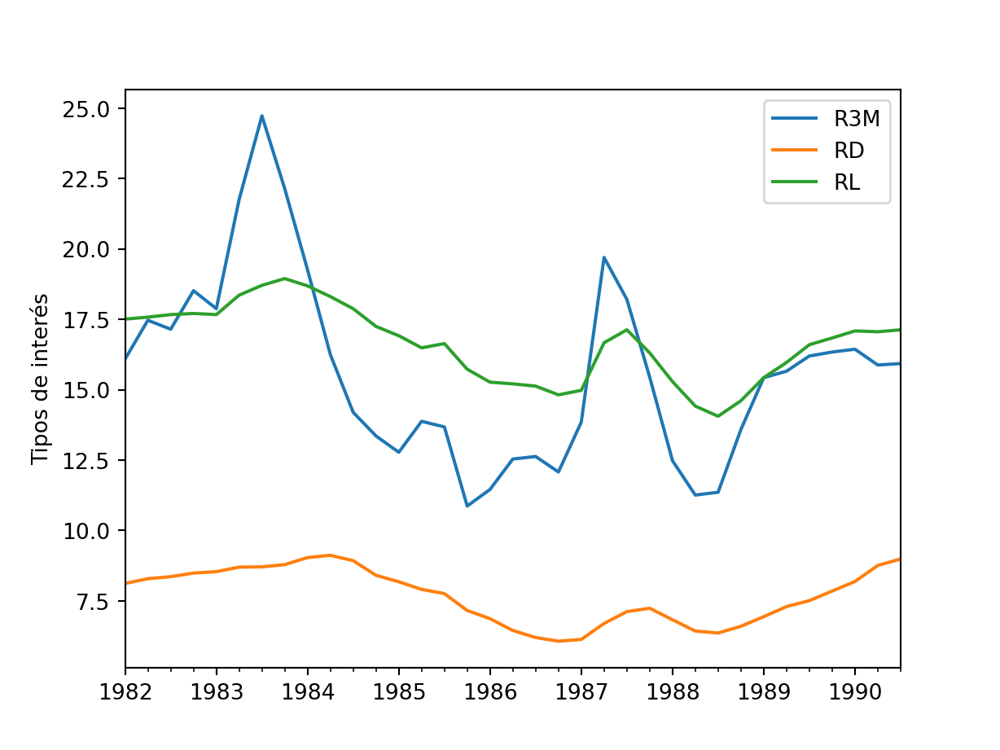
# Asignación del formato trimestral
TIPOS_ESP_ts = pd.read_csv("data/TIPOS_INT_ESP.csv", sep=";").iloc[:,1:]
date = pd.date_range(start = '1982', periods = len(TIPOS_ESP_ts.index), freq = 'QS')
TIPOS_ESP_ts.index = date
TIPOS_ESP_ts.info()<class 'pandas.core.frame.DataFrame'>
DatetimeIndex: 35 entries, 1982-01-01 to 1990-07-01
Freq: QS-JAN
Data columns (total 3 columns):
# Column Non-Null Count Dtype
--- ------ -------------- -----
0 R3M 35 non-null float64
1 RD 35 non-null float64
2 RL 35 non-null float64
dtypes: float64(3)
memory usage: 1.1 KBTIPOS_ESP_ts.head() R3M RD RL
1982-01-01 16.09 8.12 17.51
1982-04-01 17.47 8.29 17.58
1982-07-01 17.15 8.36 17.67
1982-10-01 18.52 8.49 17.71
1983-01-01 17.88 8.54 17.67TIPOS_ESP_ts.indexDatetimeIndex(['1982-01-01', '1982-04-01', '1982-07-01', '1982-10-01',
'1983-01-01', '1983-04-01', '1983-07-01', '1983-10-01',
'1984-01-01', '1984-04-01', '1984-07-01', '1984-10-01',
'1985-01-01', '1985-04-01', '1985-07-01', '1985-10-01',
'1986-01-01', '1986-04-01', '1986-07-01', '1986-10-01',
'1987-01-01', '1987-04-01', '1987-07-01', '1987-10-01',
'1988-01-01', '1988-04-01', '1988-07-01', '1988-10-01',
'1989-01-01', '1989-04-01', '1989-07-01', '1989-10-01',
'1990-01-01', '1990-04-01', '1990-07-01'],
dtype='datetime64[ns]', freq='QS-JAN')plt.figure(3)
fig, ax = plt.subplots(3, 1, sharex = True)
ax[0].plot(TIPOS_ESP_ts.R3M)
ax[0].set_ylabel('R3M')
ax[1].plot(TIPOS_ESP_ts.RD)
ax[1].set_ylabel('RD')
ax[2].plot(TIPOS_ESP_ts.RL)
ax[2].set_ylabel('RL')
plt.show()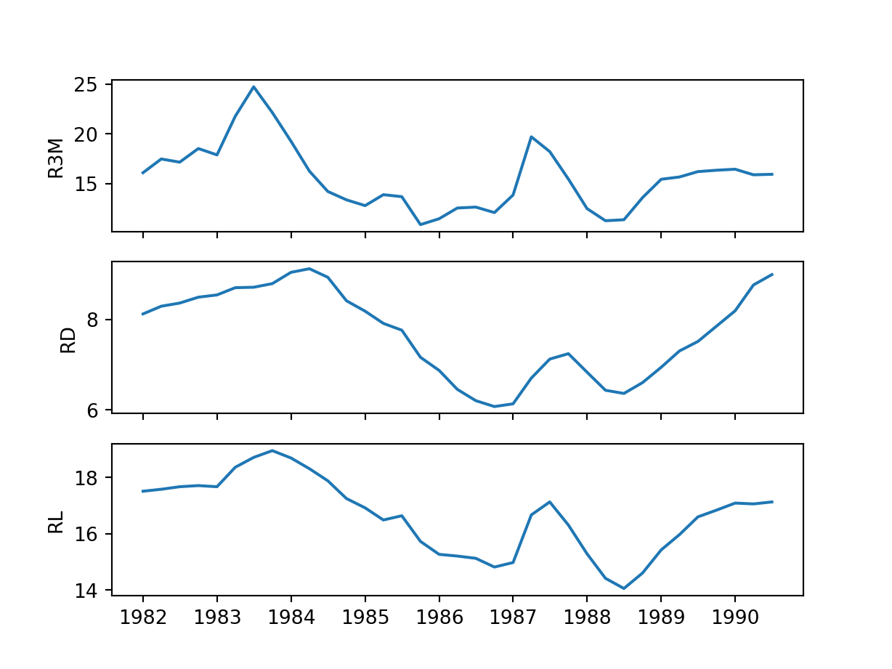
# Modelo de Klein-Monti estático
model = smf.ols(formula = "RL ~ R3M + RD", data = TIPOS_ESP_ts)
lm_KM = model.fit()
print(lm_KM.summary()) OLS Regression Results
==============================================================================
Dep. Variable: RL R-squared: 0.932
Model: OLS Adj. R-squared: 0.928
Method: Least Squares F-statistic: 219.9
Date: Wed, 15 Nov 2023 Prob (F-statistic): 2.00e-19
Time: 09:45:51 Log-Likelihood: -12.013
No. Observations: 35 AIC: 30.03
Df Residuals: 32 BIC: 34.69
Df Model: 2
Covariance Type: nonrobust
==============================================================================
coef std err t P>|t| [0.025 0.975]
------------------------------------------------------------------------------
Intercept 7.0273 0.487 14.444 0.000 6.036 8.018
R3M 0.1592 0.023 6.918 0.000 0.112 0.206
RD 0.9260 0.078 11.907 0.000 0.768 1.084
==============================================================================
Omnibus: 3.138 Durbin-Watson: 0.497
Prob(Omnibus): 0.208 Jarque-Bera (JB): 2.855
Skew: -0.671 Prob(JB): 0.240
Kurtosis: 2.602 Cond. No. 144.
==============================================================================
Notes:
[1] Standard Errors assume that the covariance matrix of the errors is correctly specified.# Contrastes de correlación en los errores (autocorrelación)
# Errores estimados (residuos)
residuos = lm_KM.resid
plt.figure(6)
plt.plot(residuos, label='Residuos')
plt.xlabel('Date')
plt.legend()
plt.show()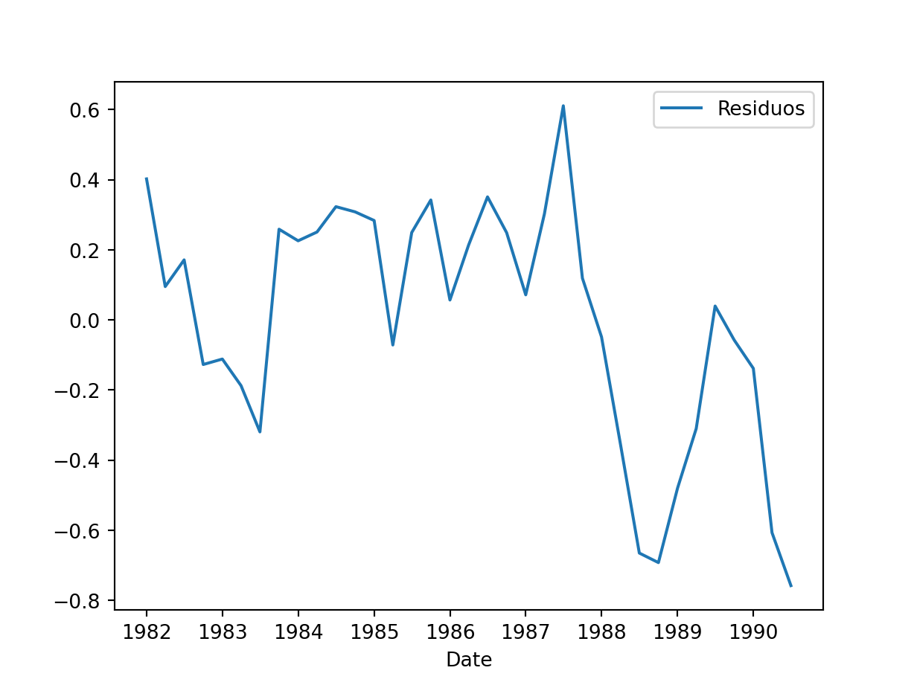
# Correlograma de los residuos
r = sm.tsa.stattools.acf(residuos, nlags=9, fft=True)
plt.figure(7)
fig, ax = plt.subplots()
tsaplots.plot_acf(residuos, lags=15, alpha=0.05, zero=False, vlines_kwargs={"colors":'black'}, color='black', title='', ax=ax)
plt.show()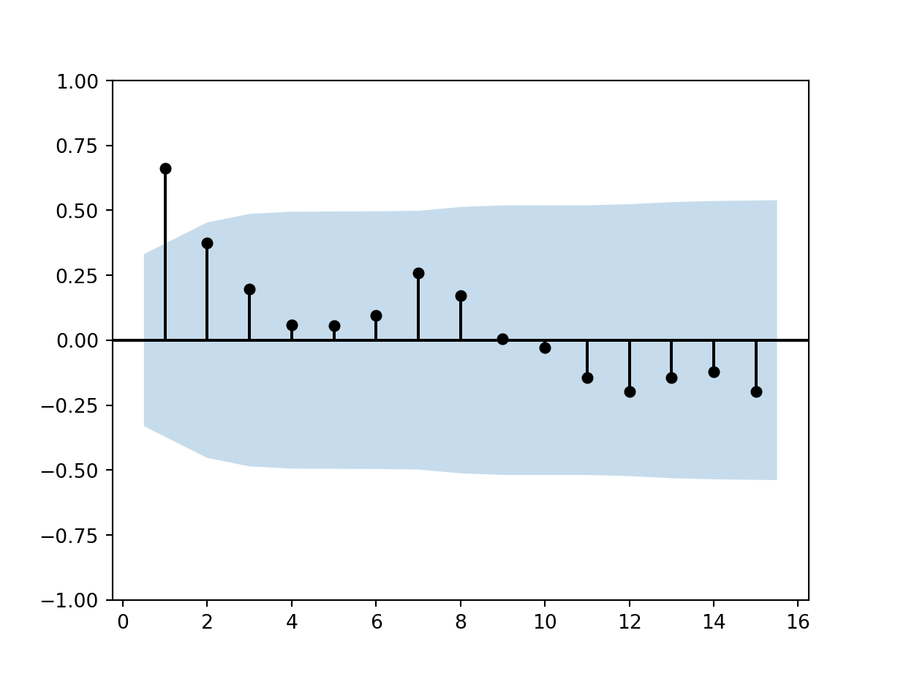
print(r)[1. 0.6611823 0.37347841 0.19608008 0.0599913 0.05527032
0.09623464 0.25873059 0.17207845 0.00503867]# Test de Durbin-Watson
sms.durbin_watson(residuos).round(5)0.49682# Test de Breusch-Godfrey
name = ['LM statistic', 'Chi^2 p-val', 'F statistic', 'F p-val']
BG_test = smsdiag.acorr_breusch_godfrey(lm_KM,1)
lzip(name, BG_test)[('LM statistic', 18.689051294910442), ('Chi^2 p-val', 1.538634377813448e-05), ('F statistic', 35.51973589135522), ('F p-val', 1.3756949593855872e-06)]# Corrección de la autocorrelación:
# MCO corregidos: errores estándar robustos
# Corrección de la matriz de covarianzas: estimador de Newey-West
# (si maxlags=0 -> HAC=HC1)
lm_KM_HAC = smf.ols(formula = "RL ~ R3M + RD", data = TIPOS_ESP_ts).fit(cov_type='HAC', cov_kwds={'maxlags':6,'use_correction':True})
print(lm_KM_HAC.summary()) OLS Regression Results
==============================================================================
Dep. Variable: RL R-squared: 0.932
Model: OLS Adj. R-squared: 0.928
Method: Least Squares F-statistic: 103.2
Date: Wed, 15 Nov 2023 Prob (F-statistic): 1.11e-14
Time: 09:45:51 Log-Likelihood: -12.013
No. Observations: 35 AIC: 30.03
Df Residuals: 32 BIC: 34.69
Df Model: 2
Covariance Type: HAC
==============================================================================
coef std err z P>|z| [0.025 0.975]
------------------------------------------------------------------------------
Intercept 7.0273 0.859 8.183 0.000 5.344 8.710
R3M 0.1592 0.033 4.778 0.000 0.094 0.224
RD 0.9260 0.142 6.509 0.000 0.647 1.205
==============================================================================
Omnibus: 3.138 Durbin-Watson: 0.497
Prob(Omnibus): 0.208 Jarque-Bera (JB): 2.855
Skew: -0.671 Prob(JB): 0.240
Kurtosis: 2.602 Cond. No. 144.
==============================================================================
Notes:
[1] Standard Errors are heteroscedasticity and autocorrelation robust (HAC) using 6 lags and with small sample correction# Modelo de Klein-Monti dinámico
# Especificación ARDL(1,1,1)
model = smf.ols(formula = "RL ~ RL.shift(1) + R3M + R3M.shift(1) + RD + RD.shift(1)", data = TIPOS_ESP_ts)
lm_KM_dyn = model.fit()
print(lm_KM_dyn.summary()) OLS Regression Results
==============================================================================
Dep. Variable: RL R-squared: 0.974
Model: OLS Adj. R-squared: 0.970
Method: Least Squares F-statistic: 212.0
Date: Wed, 15 Nov 2023 Prob (F-statistic): 2.41e-21
Time: 09:45:51 Log-Likelihood: 4.5383
No. Observations: 34 AIC: 2.923
Df Residuals: 28 BIC: 12.08
Df Model: 5
Covariance Type: nonrobust
================================================================================
coef std err t P>|t| [0.025 0.975]
--------------------------------------------------------------------------------
Intercept 1.9593 1.028 1.906 0.067 -0.146 4.065
RL.shift(1) 0.7192 0.138 5.200 0.000 0.436 1.003
R3M 0.1662 0.025 6.673 0.000 0.115 0.217
R3M.shift(1) -0.0778 0.037 -2.127 0.042 -0.153 -0.003
RD 0.6596 0.191 3.450 0.002 0.268 1.051
RD.shift(1) -0.4898 0.247 -1.981 0.057 -0.996 0.017
==============================================================================
Omnibus: 2.342 Durbin-Watson: 1.600
Prob(Omnibus): 0.310 Jarque-Bera (JB): 1.374
Skew: -0.177 Prob(JB): 0.503
Kurtosis: 2.081 Cond. No. 787.
==============================================================================
Notes:
[1] Standard Errors assume that the covariance matrix of the errors is correctly specified.b = lm_KM_dyn.params[1:]
# Multiplicadores de corto plazo
b[1].round(3) ; b[3].round(3)0.166
0.66# Multiplicadores de largo plazo
b_lr_R3M = (b[1]+b[2])/(1-b[0])
b_lr_R3M.round(3)0.315b_lr_RD = (b[3]+b[4])/(1-b[0])
b_lr_RD.round(3)0.605# Contrastes
H_0_b1 = '(R3M = 0)'
W_test = lm_KM_dyn.wald_test(H_0_b1, use_f = False)
W_test<class 'statsmodels.stats.contrast.ContrastResults'>
<Wald test (chi2): statistic=[[44.52791871]], p-value=2.507557561604631e-11, df_denom=1>H_0_b3 = '(RD = 0)'
W_test = lm_KM_dyn.wald_test(H_0_b3, use_f = False)
W_test<class 'statsmodels.stats.contrast.ContrastResults'>
<Wald test (chi2): statistic=[[11.90371726]], p-value=0.0005602203401182512, df_denom=1>
Caso multivariante (especificación VAR): Evolución temporal de los tipos de cambio
En esta segunda aplicación se estimará un modelo vectorial autorregresivo para explicar la evolución en el tiempo de tres tipos de cambio.
Código R
# Lectura de librerías
library(tidyverse)
library(readxl)
library(vars)
# Lectura de datos
data <- read_excel("data/TIPOS_CAMB.xls")
data$reur = c(NA,100*diff(log(data$EUR)))
data$rgbp = c(NA,100*diff(log(data$GBP)))
data$rjpy = c(NA,100*diff(log(data$JPY)))
data = data[-1,]
# Modelo VAR
VARselect(data[c("reur","rgbp","rjpy")], lag.max = 10)$selection
AIC(n) HQ(n) SC(n) FPE(n)
4 2 1 4
$criteria
1 2 3 4 5
AIC(n) -5.433453428 -5.43726462 -5.437666647 -5.438909241 -5.438464346
HQ(n) -5.429472196 -5.43029747 -5.427713567 -5.425970237 -5.422539418
SC(n) -5.421888924 -5.41702674 -5.408755386 -5.401324601 -5.392206329
FPE(n) 0.004367985 0.00435137 0.004349621 0.004344219 0.004346152
6 7 8 9 10
AIC(n) -5.437389700 -5.436794113 -5.435808057 -5.435335655 -5.433668221
HQ(n) -5.418478849 -5.414897337 -5.410925357 -5.407467031 -5.402813673
SC(n) -5.382458304 -5.373189339 -5.363529904 -5.354384124 -5.344043311
FPE(n) 0.004350826 0.004353418 0.004357713 0.004359772 0.004367048VAR(data[c("reur","rgbp","rjpy")],p = 2)
VAR Estimation Results:
=======================
Estimated coefficients for equation reur:
=========================================
Call:
reur = reur.l1 + rgbp.l1 + rjpy.l1 + reur.l2 + rgbp.l2 + rjpy.l2 + const
reur.l1 rgbp.l1 rjpy.l1 reur.l2 rgbp.l2
0.1474965506 -0.0183557359 -0.0070978299 -0.0118082131 0.0066228786
rjpy.l2 const
-0.0054272893 0.0001368541
Estimated coefficients for equation rgbp:
=========================================
Call:
rgbp = reur.l1 + rgbp.l1 + rjpy.l1 + reur.l2 + rgbp.l2 + rjpy.l2 + const
reur.l1 rgbp.l1 rjpy.l1 reur.l2 rgbp.l2 rjpy.l2
-0.025270542 0.221361804 -0.039016040 0.046926637 -0.067794083 0.003286917
const
0.002825689
Estimated coefficients for equation rjpy:
=========================================
Call:
rjpy = reur.l1 + rgbp.l1 + rjpy.l1 + reur.l2 + rgbp.l2 + rjpy.l2 + const
reur.l1 rgbp.l1 rjpy.l1 reur.l2 rgbp.l2
0.0410612623 -0.0708456993 0.1324572148 -0.0188915075 0.0249075437
rjpy.l2 const
0.0149565492 -0.0004125908 var = VAR(data[c("reur","rgbp","rjpy")],p = 2)
# Análisis de causalidad de Granger
causality(var,cause = c("rgbp","rjpy"))$Granger
Granger causality H0: rgbp rjpy do not Granger-cause reur
data: VAR object var
F-Test = 0.44101, df1 = 4, df2 = 21396, p-value = 0.7791causality(var,cause = c("reur","rjpy"))$Granger
Granger causality H0: reur rjpy do not Granger-cause rgbp
data: VAR object var
F-Test = 7.2478, df1 = 4, df2 = 21396, p-value = 7.917e-06causality(var,cause = c("reur","rgbp"))$Granger
Granger causality H0: reur rgbp do not Granger-cause rjpy
data: VAR object var
F-Test = 4.3455, df1 = 4, df2 = 21396, p-value = 0.001634# Funciones de respuesta al impulso y de descomposición de la varianza
ir = irf(var,n.ahead = 20)
plot(ir)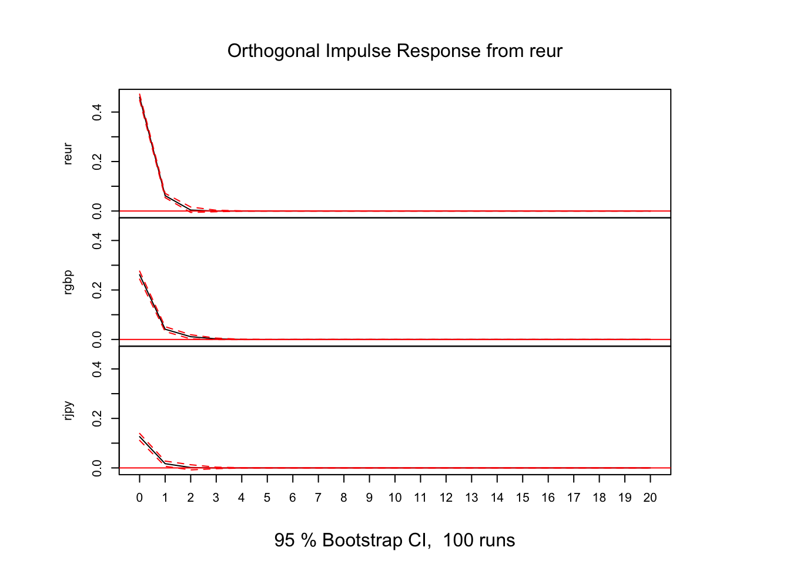
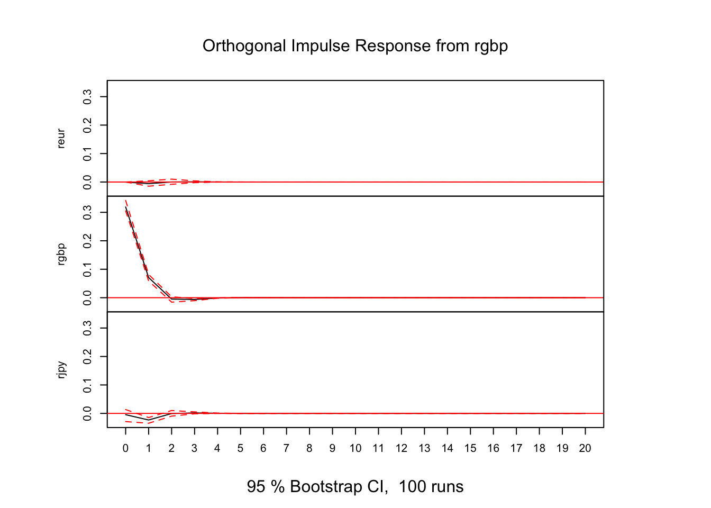
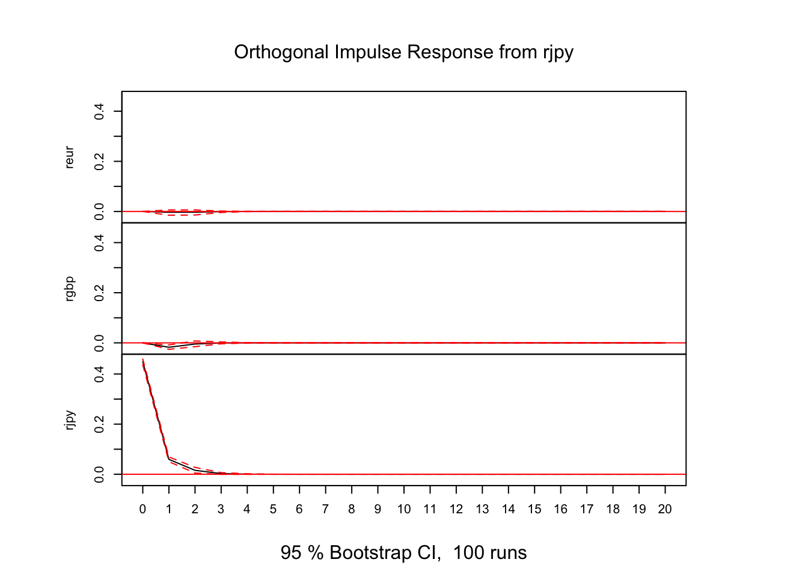
vd = fevd(var,n.ahead = 20)
plot(vd)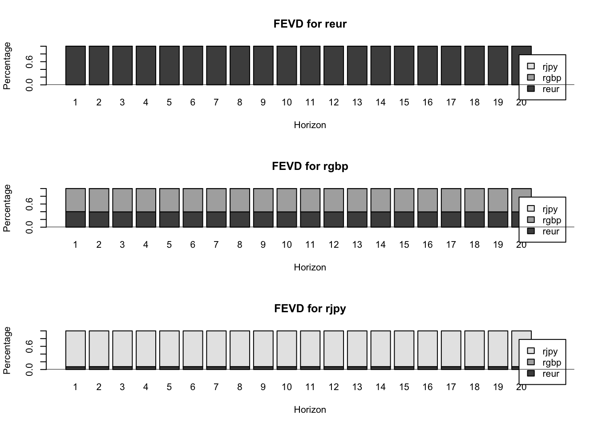
Código Python
# Lectura de librerías
import numpy as np
import pandas as pd
import matplotlib.pyplot as plt
import seaborn as sns
import statsmodels.tsa.api as smt
# Lectura de datos
data = pd.read_excel("data/TIPOS_CAMB.xls", index_col=0)
def LogDiff(x):
x_diff = 100*np.log(x/x.shift(1))
x_diff = x_diff.dropna()
return x_diff
data = pd.DataFrame({'reur':LogDiff(data['EUR']),
'rgbp':LogDiff(data['GBP']),
'rjpy':LogDiff(data['JPY'])})
# Modelo VAR
model = smt.VAR(data)
res = model.select_order(maxlags=10)
print(res.summary()) VAR Order Selection (* highlights the minimums)
==================================================
AIC BIC FPE HQIC
--------------------------------------------------
0 -5.346 -5.343 0.004769 -5.345
1 -5.433 -5.422* 0.004368 -5.429
2 -5.437 -5.417 0.004351 -5.430*
3 -5.438 -5.409 0.004350 -5.428
4 -5.439* -5.401 0.004344* -5.426
5 -5.438 -5.392 0.004346 -5.423
6 -5.437 -5.382 0.004351 -5.418
7 -5.437 -5.373 0.004353 -5.415
8 -5.436 -5.364 0.004358 -5.411
9 -5.435 -5.354 0.004360 -5.407
10 -5.434 -5.344 0.004367 -5.403
--------------------------------------------------res = model.fit(maxlags=2)
print(res.summary()) Summary of Regression Results
==================================
Model: VAR
Method: OLS
Date: Wed, 15, Nov, 2023
Time: 09:46:02
--------------------------------------------------------------------
No. of Equations: 3.00000 BIC: -5.41698
Nobs: 7139.00 HQIC: -5.43024
Log likelihood: -10960.3 FPE: 0.00435167
AIC: -5.43720 Det(Omega_mle): 0.00433889
--------------------------------------------------------------------
Results for equation reur
==========================================================================
coefficient std. error t-stat prob
--------------------------------------------------------------------------
const 0.000137 0.005444 0.025 0.980
L1.reur 0.147497 0.015678 9.408 0.000
L1.rgbp -0.018356 0.017037 -1.077 0.281
L1.rjpy -0.007098 0.012120 -0.586 0.558
L2.reur -0.011808 0.015663 -0.754 0.451
L2.rgbp 0.006623 0.017032 0.389 0.697
L2.rjpy -0.005427 0.012120 -0.448 0.654
==========================================================================
Results for equation rgbp
==========================================================================
coefficient std. error t-stat prob
--------------------------------------------------------------------------
const 0.002826 0.004882 0.579 0.563
L1.reur -0.025271 0.014058 -1.798 0.072
L1.rgbp 0.221362 0.015277 14.490 0.000
L1.rjpy -0.039016 0.010868 -3.590 0.000
L2.reur 0.046927 0.014045 3.341 0.001
L2.rgbp -0.067794 0.015272 -4.439 0.000
L2.rjpy 0.003287 0.010868 0.302 0.762
==========================================================================
Results for equation rjpy
==========================================================================
coefficient std. error t-stat prob
--------------------------------------------------------------------------
const -0.000413 0.005524 -0.075 0.940
L1.reur 0.041061 0.015908 2.581 0.010
L1.rgbp -0.070846 0.017287 -4.098 0.000
L1.rjpy 0.132457 0.012298 10.771 0.000
L2.reur -0.018892 0.015893 -1.189 0.235
L2.rgbp 0.024908 0.017282 1.441 0.150
L2.rjpy 0.014957 0.012298 1.216 0.224
==========================================================================
Correlation matrix of residuals
reur rgbp rjpy
reur 1.000000 0.634447 0.270764
rgbp 0.634447 1.000000 0.164311
rjpy 0.270764 0.164311 1.000000# Funciones de respuesta al impulso y de descomposición de la varianza
irf = res.irf(20)
plt.figure(8)
fig = irf.plot()
plt.show()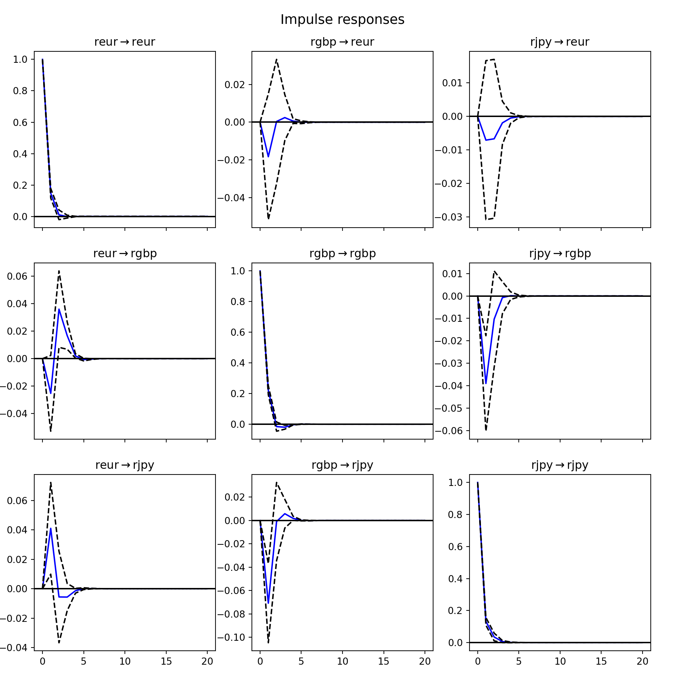
fevd = res.fevd(20)
plt.figure(9)
fig = fevd.plot()
plt.show()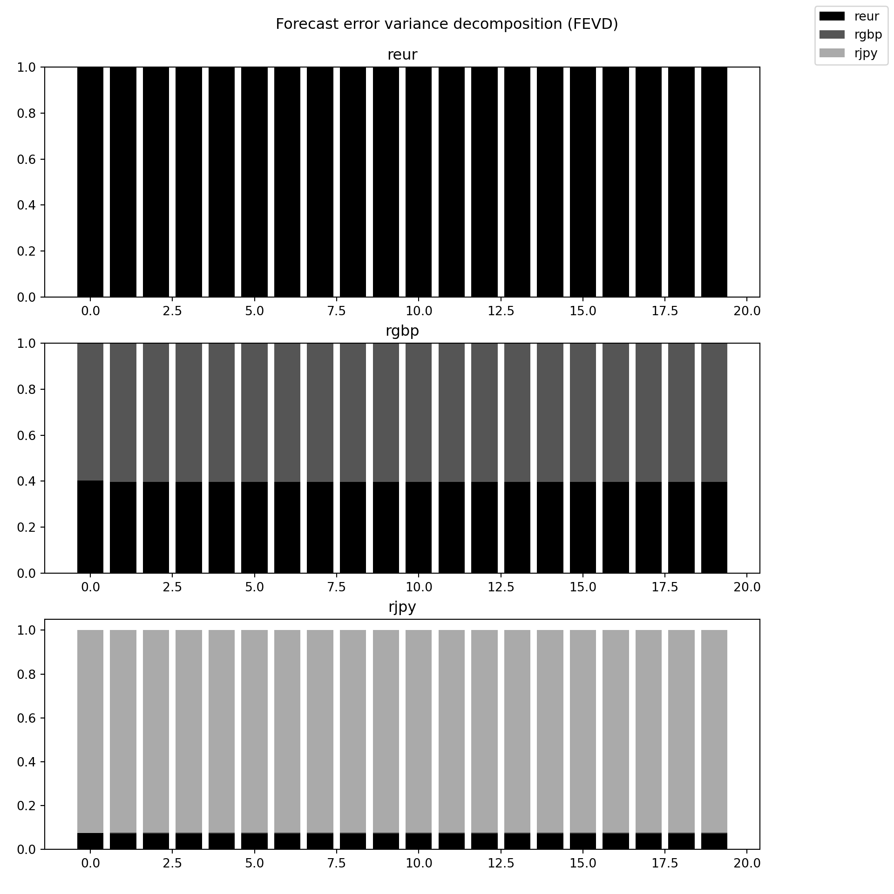